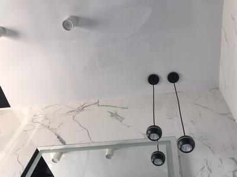
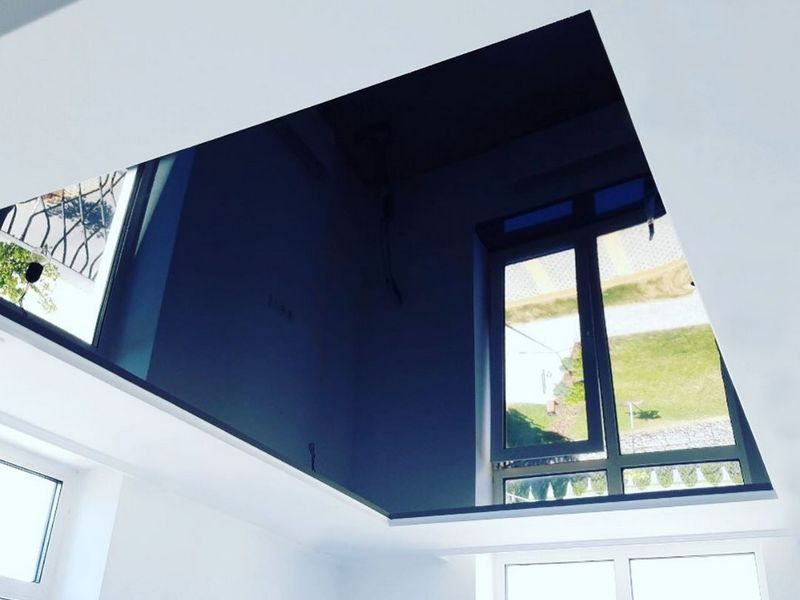

Глянцеві натяжні стелі в Києві

Створення натяжної стелі на сьогоднішній день є одним з найпоширеніших способів облаштування верхньої частини житлового або розважального приміщення. Виробники, враховуючи потреби кожного клієнта і розуміючи те, що краса кожного своя, пропонують велику різноманітність варіацій на тему натяжних стель. Залежно від зовнішнього вигляду та матеріалу виготовлення розрізняють натяжні стелі:
- глянцеві;
- матові.
- з різними кольоровими та декоративними рішеннями.
Сьогодні основна увага буде приділена першому різновиду, а саме, глянцевим натяжним стелям, які користуються найбільшою популярністю серед покупців та замовників. Від своїх матових побратимів така модель відрізняється не тільки великою світло відбиваючою здатністю, але й можливістю відбивати предмети в кімнаті. Ця риса наближає їх до дзеркал, і нею дуже люблять користуватися дизайнери.
Тільки ручна робота може зрівнятися з пишнотою та красою глянцю на стелі, але при цьому коштуватиме вона в рази дорожче. А якими ще властивостями наділена натяжна стеля?
Переваги глянцевої натяжної стелі
Якщо говорити про натяжні стелі в цілому, то кожен різновид має масу незаперечних плюсів перед іншими видами обробки:
- Шикарний зовнішній вигляд, який не забезпечить більше жодний різновид декоративних робіт.
- Великий вибір колірних рішень, які дозволяють підібрати варіант для втілення будь-якого стилістичного задуму.
- Завдяки структурі матеріалу виготовлення та наявності прошарку між покриттям та стелею досягається висока шумо- та теплоізоляція. У результаті ви утримуєте до 60% тепла у квартирі та до 90% звуків. До речі, підвісні побратими в цьому плані не поступаються натяжним.
- Порятунок від вологи. Якщо у вас дорогий ремонт та якісні меблі, то натяжна стеля може стати ще й надійним захистом для них від затоплення, оскільки він може витримати до 100 кг води, не пропустивши жодної краплі всередину приміщення.
- Запобігання цвілі. Багатьом знайома поява плісняви та грибка на стелі. Так ось на натяжному покритті просто не можуть оселитися мікроорганізми, до того ж його легко доглядати і протирати пил.
- Довговічність. Найчастіше виробники гарантують десятирічний термін служби, але за фактом ця цифра значно вища, при цьому з кожним роком стеля не втрачає своєї привабливості.
- Швидкість встановлення. Якщо ви вибрали однорівневу конструкцію, встановити її можна за кілька годин. При цьому у вас у квартирі залишиться мінімум будівельного сміття.
- Забирає мінімум висоти. Якщо брати до порівняння підвісні варіанти, різниця між висотою приміщення може становити до 6-7 см, а для низьких приміщень це відчутно.
- Низька вартість. Цей чинник спірний багатьом. Але, якщо вибрати, як альтернативу, фарбування або обклеювання шпалерами, то параметр ціни легко перетворюється на плюс – за термін служби натяжної стелі ви кілька разів перефарбовували б верх кімнати і переклеювали шпалери.

Якщо з усіх переваг виділити тільки ті, які притаманні виключно глянцевим стелям, то їм також є чим похвалитися:
- Ідеальні для встановлення в затемнених приміщеннях – ванній та коридорі, оскільки глянець значно освітлює кімнату.
- Здатні візуально збільшити обсяг простору.
- Надають святкового вигляду будь-якій кімнаті.
- Вологостійкі на всі 100%.
- Майстерно приховують будь-які нерівності стелі та комунікаційне обладнання.
Недоліки глянцю
Сучасний ринок пропонує нам кілька різновидів натяжної стелі, залежно від матеріалу. Це можуть бути:
- тканинні;
- із ПВХ полотна.
На жаль, глянцеві варіанти не можуть бути виготовлені з тканини. У цьому полягає перший незначний мінус, адже декор на тканині виглядає як художня картина. Але цей недолік буде таким лише у випадку, якщо ви задумали нанесення малюнка.
Другим недоліком можна вважати не надто високу практичність глянцю. У вашій кімнаті буде святково лише у разі частого та кропіткого догляду. Якщо не протирати пилюку вчасно, свято над головою згасне.
Але, як видно, переваг у такого покриття, безсумнівно, більше і вони вагоміші.
Класифікація глянцевих стель
Як уже говорилося, існує два основних критерії, за якими класифікуються натяжні стелі:
- матеріал полотна;
- колірне оформлення.
Оскільки з тканини неможливо виконати глянцеву поверхню, виробляється вона найчастіше з плівки ПВХ, рідше зі склотканини. Полівінілхлоридне полотно відрізняється високою міцністю і легко доглядати за ним. До того ж, воно має величезну колірну різноманітність.
Залежно від колірного рішення, сучасні виробники пропонують:
- однотонні;
- багатобарвні;
- з візерунками та малюнками стелі.
Якщо говорити виключно про глянець, то переважно споживач вибирає однокольорові моделі, оскільки саме вони зберігають головну перевагу – віддзеркалення світла. Такий варіант і в прямому, і в переносному сенсі виглядатиме блискуче. Така здатність чудово впорається із завданням візуального розширення простору. Це скаже вам навіть дизайнер-початківець. Наприклад, для «хрущовок» з низькими стелями та не найвдалішим плануванням кращого рішення не знайти.
Також набирає популярності у користувачів ще один різновид однотонного покриття з ефектом «зоряного неба». Вона буде доречна практично у будь-якому приміщенні – від ресторану до спальні чи дитячої кімнати.
Де найкраще виглядають глянцеві стелі?
Правду кажучи, вони скрізь мають шикарний вигляд і прикрашають різні кімнати. Але все ж таки перевага установки належить:
- Передпокій: для збільшення та освітлення простору.
- Ванних кімнат: причини ті ж, що і в коридорах, але плюс вологостійкість матеріалу.
- Кухням та вітальні з невеликою площею: для надання їм урочистого вигляду.
- Спальним: компенсують нестачу світла та дзеркал.
Якщо ви хочете встановити глянцеву стелю у просторому приміщенні, то тут потрібно бути обережним. З огляду на свою дзеркальність, таке покриття може відволікати від решти інтер'єру і «заважати» йому. Але вихід є однозначно. У такому разі доречним буде монтаж багаторівневих конструкцій, де буде скомбіновано кілька варіантів – мат, глянець та сатин.
Ще одним аргументом на користь установки глянцю для багатьох стає світлопропускна здатність. Завдяки тому, що він пропускає до 50% світла, можна створити дивовижні «парячі» конструкції з прихованим у них підсвічуванням. Або ж створити велику конструкцію, що світиться, сховавши під покриття довгі люмінесцентні лампи. Тут справа лише за вашою фантазією.
Одним словом, глянцева натяжна стеля є чудовою можливістю повного перетворення вашого будинку. І якщо раніше він вважався показником пафосу та гламуру, то у сучасному світі став просто варіантом оформлення свого життєвого простору, доступним кожній родині. Немає нічого простішого для створення неповторного вигляду вашого будинку та його особливого шарму.
Дизайнерські прийоми з використанням глянцевої натяжної стелі
Дизайнери дуже часто використовують натяжну стелю з глянцевою поверхнею у своїх проектах, якщо потрібно надати деякого шарму, ошатності або відчуття свята. Причому, зробити це можна не тільки у вітальні чи їдальні, де сім'я зустрічає друзів, а й у досить несподіваних приміщеннях.
Глянцева натяжна стеля з фотодруком у ванній, басейні
Ванна квартира, басейн у приватному будинку або СПА-комплексі – це приміщення, які не дають дизайнерам особливих можливостей відпустити у політ свою фантазію. Але натяжні стелі із глянцевою поверхнею змінили ситуацію. Навіть у малогабаритній ванній стандартній квартирі можна створити справжнє підводне царство або картинку тропічного острова, якщо підійти до втілення ідеї правильно та використати якісний фотодрук на натяжній стелі.
Просторе приміщення басейну пропонує ще більше варіантів оформлення. Тут все залежить від смаку господарів та фантазії художника. А якісне втілення може гарантувати компанія Nova Stelya.
Стеля, що парять, і лінії в кафе, нічних клубах, розважальних закладах
У той час, коли відвідувачі стають все більш вимогливими до оформлення інтер'єрів ресторанів, кафе, клубів, дизайнери можуть запропонувати дуже стильне оформлення стелі – стеля, що «парить» або «парячі лінії». Дуже вражає таке рішення саме з глянцевим полотном, так як його дзеркальна поверхня збільшує ефект, відбиваючи контур, що святиться, або лінії по стелі.
Стелю, що парить, і лінії можна використовувати і в житлових приміщеннях. Нерідко фахівці за допомогою такого ефекту і властивості глянцю, що відображає, «розширюють» і «піднімають» темні передпокої, зонують кімнати і навіть створюють необхідну атмосферу в спальні.
Використання глянцевої стелі в дизайні інтер'єрів майже безмежно. Але будь-яке рішення швидко втратить свій ефект, якщо за полотном правильно не доглядати.
Догляд за глянцевими натяжними стелями
Одна з основних переваг натяжної стелі – простота догляду. Але глянцеве полотно має особливу поверхню, яка при догляді може зашкодити. Будь-яка подряпина або пошкодження текстури будуть дуже помітні. Тому обов'язково запам'ятати кілька правил:
- Тільки м'які засоби для чищення без кислотних і лужних компонентів.
- Тільки м'які губки та ганчірки з коротким ворсом.
- Жодних абразивних частинок, здатних подряпати поверхню.
Про натяжні стелі з глянцевим полотном можна довго і захоплююче розповідати, але відомо, що краще один раз побачити, ніж сто разів прочитати, тому звертайтеся до компанії Nova Stelya і ми представимо вам фото вже реалізованих проектів глянцевих натяжних стель.
Часті запитання та відповіді
🤗 Чи можна зробити глянцеву натяжну стелю у дитячої?
Хоч і прийнято вважати, що глянець у дитячих недоречний, трапляються випадки, коли його використання виправдане. Наприклад, якщо кімната дуже маленька, темна або низькі стелі. У цьому можна використовувати глянцеву поверхню у нейтральному пастельному кольорі.
🤗 Скільки часу займає встановлення глянцевої натяжної стелі?
Якщо це стандартна конструкція без додаткового освітлення та ефектів, встановити її можна в одній середній кімнаті за кілька годин. Якщо використовуються додаткові прилади та ефекти, то установка займає більше часу, але це стосується не тільки глянцевого, але й іншого ПВХ-полотна.
🤗 Чи захищає глянцеве полотно від затоплення?
Захищає. Якщо говорити про здібність ПВХ-плівки збирати воду і витримувати навантаження до 100 кг на квадратний метр, то не має значення, яка текстура її поверхні.
🤗 Чи можна знімати та повторно встановлювати глянцеву натяжну стелю?
Демонтаж полотна та повторним монтажем залежить не від виду ПВХ-полотна, а від способу його фіксації. Якщо є ризик, що сусіди зверху затоплять, потрібно буде зробити ремонт або виникне інша необхідність зняти полотно, краще вибирати систему кріплення «Кліпсо» або гарпун.
🤗 Чи можна наносити фотодрук на глянцеве полотно?
Можна, можливо. Існують два способи. Якщо зображення має бути легким та прозорим, то друк потрібно наносити безпосередньо на плівку. Якщо потрібна хороша передача кольорів і чіткість ліній, доведеться використовувати додатковий шар друку – підкладку.